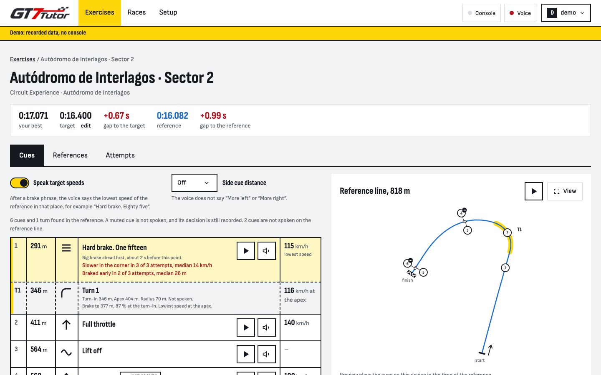
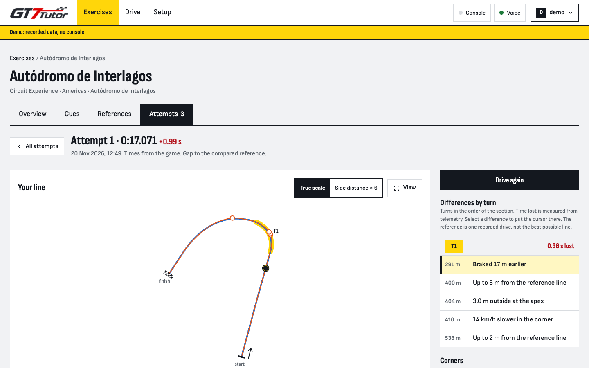
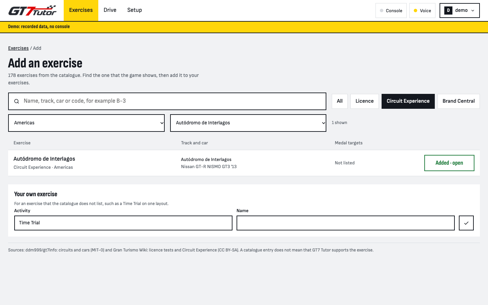

How it works
For each exercise the application leads you through four steps. It always shows the current step and the next action.
-
1Record the reference
Open the exercise in the game and record its demonstration three times. The demonstration is the same on every run, but the menus before and after it are not, so GT7 Tutor finds the part that repeats and keeps the part where the timer of the demonstration runs. That drive becomes the reference for the cues.

-
2Drive without voice
Drive two or three baseline attempts. The game timer starts and finishes each attempt, and its value is the time of the attempt. GT7 Tutor lists the differences from the reference. These attempts show your pace before the voice helps.

-
3Drive with voice
Start a guided attempt and drive. The voice names the action: “Hard brake. One fifteen”, “Full throttle”, “Keep left” or “Keep right” when you leave the line, or “Tighter” when you run wide before an apex. The first word starts about half a second before the point, plus the measured delay of your device. After the finish the voice says one focus for the next attempt, such as “Turn one. Brake later.”

-
4Review
Compare each attempt with the reference on a map and in linked speed and pedal charts. The review groups the differences by turn and shows the time lost in each turn. In the cue list, differences that repeat across attempts show as counts, for example “Braked early in 4 of 6 attempts”. A difference is not always a mistake: the reference is one recorded drive.

What you need
- A PS5 with Gran Turismo 7.
- A computer with macOS, Windows or Linux on the same home network as the console.
- Docker for the database, and Node.js 26 or later with pnpm. On macOS and Linux, a setup script checks these and prepares the rest. On Windows, the command
pnpm setup:localprepares the rest. - A current browser on that computer or on a phone. On a phone, turn off auto-lock during a session.
Exercises
Add an exercise from the catalogue, or create your own. You record a reference from a demonstration of the game, and GT7 Tutor then guides you through that exercise.
The catalogue lists 100 licence tests, 58 Circuit Experience sections and 20 Brand Central exercises, taken from public sources. GT7 Tutor starts and finishes an attempt with the game timer. The timer is checked in PS5 recordings of one Circuit Experience section and two licence tests. A full training session on a PS5 with this timer is not checked yet.

Support the project
GT7 Tutor is free and stays free. If it helps you, you can buy the author a coffee. Donations unlock nothing: every feature is in the free code.
Buy me a coffee